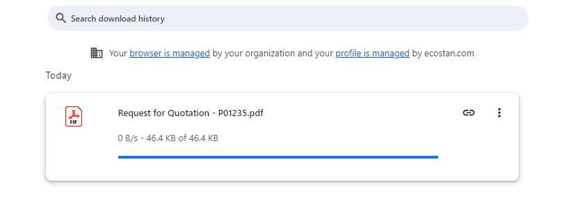
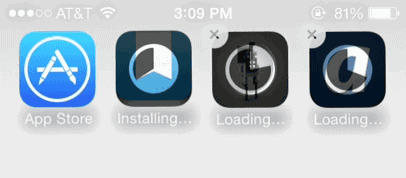

Pasek postępu informuje użytkownika o aktualnym stanie wykonywanej operacji. Dzięki temu użytkownik wie, że system działa poprawnie i nie zawiesił się.

Animowany wskaźnik ładowania informuje użytkownika, że aplikacja wykonuje operację i należy chwilę poczekać. Jest to przykład ciągłego informowania o stanie systemu.
Źródło: Stack Overflow – Is it possible to display progress on app icon?